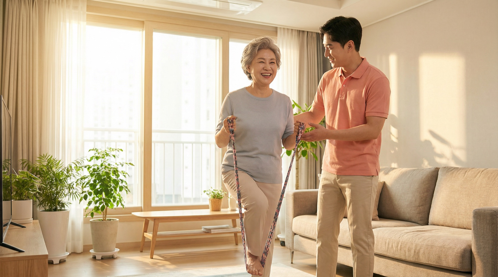
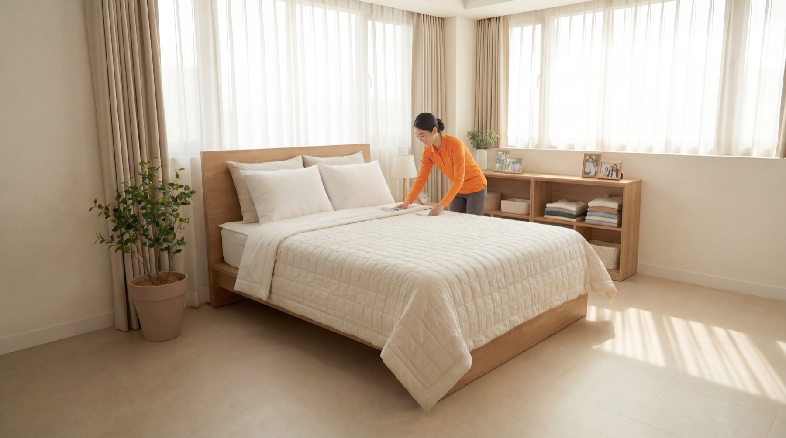
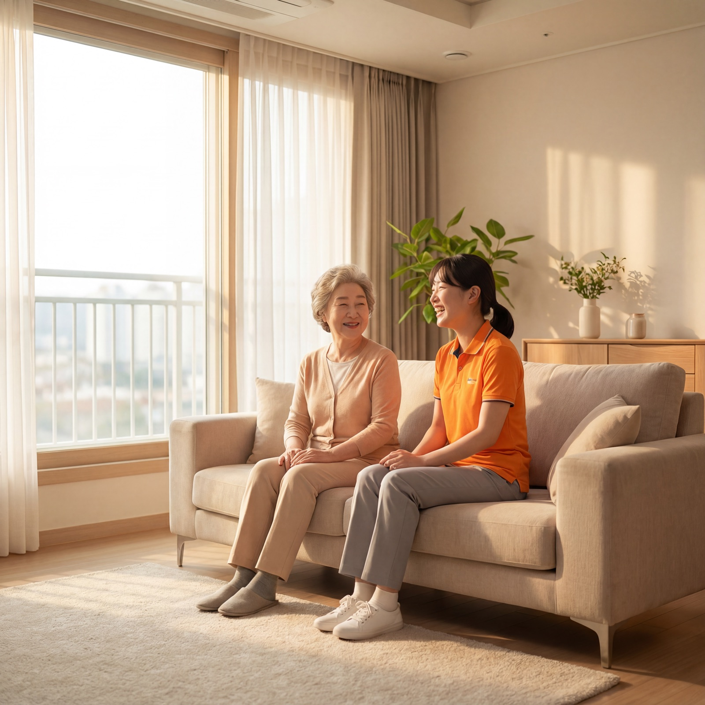
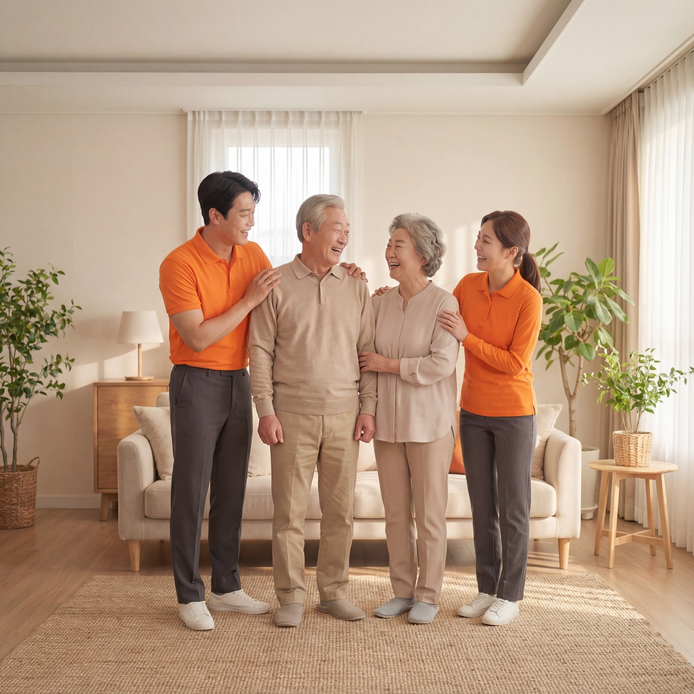
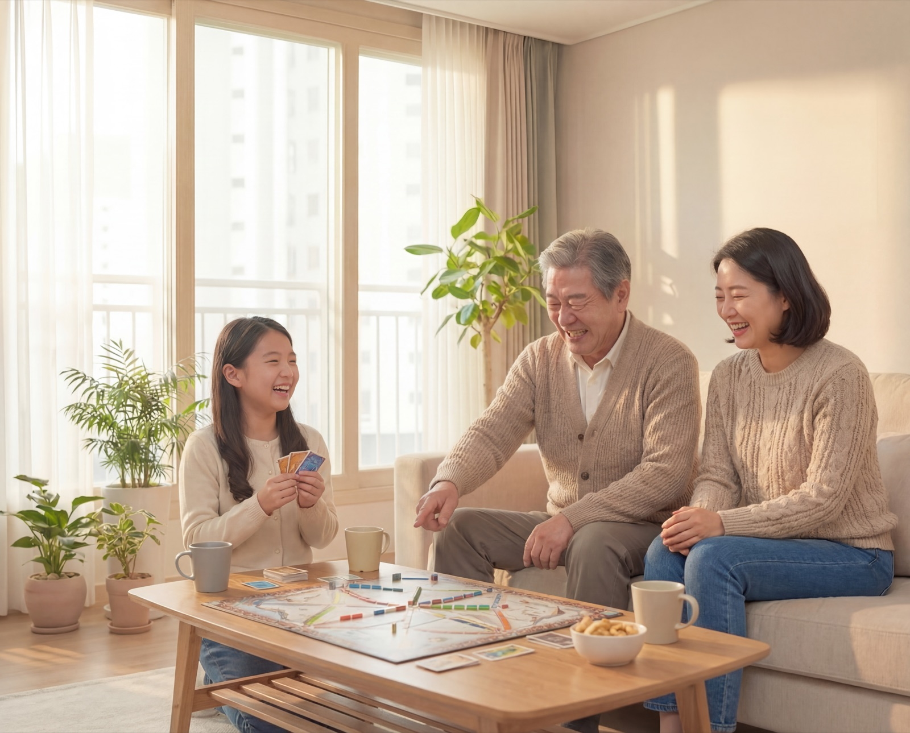

운동이 필요하지만
혼자서는 꾸준히 하기 어렵습니다
집에서 이어가는 건강한 노후
비타스텝은 시니어 맞춤 운동과 생활위생·생활안전 케어를 함께 제공하는 방문형 인홈 케어 서비스입니다. 요양시설이 아직 이르다고 느껴질 때, 집에서 시작하는 현실적인 관리 대안이 됩니다.

가족의 고민
부모님이 아직 시설에 가실 단계는 아니지만, 분명 누군가의 도움이 필요한 때가 있습니다. 비타스텝은 바로 그 사이의 공백을 메우기 위해 시작됐습니다.
혼자서는 꾸준히 하기 어렵습니다
생활의 작은 불편이 쌓입니다
거리와 일상 때문에 쉽지 않습니다
그렇다고 방치하기도 불안합니다
핵심 서비스
몸의 기능과 집 안의 일상이 함께 무너지지 않도록, 한 번의 방문 안에서 꼭 필요한 핵심 케어를 함께 제공합니다.

몸의 기능
개인의 현재 몸 상태와 생활 기능에 맞춰 유연성, 스트레칭, 균형, 낙상예방, 재활운동 기반의 움직임 지원을 제공합니다.

집 안의 일상
시니어의 일상에 직접 영향을 주는 생활환경을 함께 살펴 불편과 위험을 줄이고 더 편안한 재가생활을 돕습니다.
※ 의료행위, 전문 대청소, 전면적인 가사대행은 제공하지 않습니다.
방문 방식
일회성 방문이 아니라, 반복 가능한 관리 구조를 통해 집에서의 일상을 더 안정적으로 이어갈 수 있도록 돕습니다.

현재 상태와 생활환경을 확인합니다
운동과 생활안전 케어를 상황에 맞게 진행합니다
방문 내용과 특이사항을 정리해 가족이 확인할 수 있도록 돕습니다
이용 대상
퇴원 후 집에서 회복을 이어가야 하는 부모님
혼자 계시는 시간이 길어 움직임과 생활 관리가 걱정되는 경우
낙상, 통증, 허약으로 일상 기능 저하가 염려되는 경우
자주 찾아가기 어려워도 꾸준한 관리 구조가 필요한 가족
요양시설 입소 전, 집에서 가능한 관리부터 시작하고 싶은 경우
차별점
집이라는 환경을 기준으로 몸의 기능과 생활안전을 함께 살피고, 가족이 안심할 수 있는 소통 구조를 지향합니다.
시설이 아닌 익숙한 집을 기준으로, 생활 리듬과 동선을 해치지 않는 방식으로 돌봄을 설계합니다.
몸이 약해질수록 집 안의 작은 불편은 더 큰 위험이 됩니다. 비타스텝은 이 둘을 분리하지 않고 함께 관리합니다.
현장에 매번 함께하지 않아도, 방문 내용과 상태를 확인할 수 있는 구조를 지향합니다.
식단, 동행, 주거안전, 정서·문화까지 같은 철학 위에서 확장 가능한 기반을 갖고 있습니다.
제공 범위
상담 전에 서비스 범위를 분명히 확인할 수 있도록, 현재 제공하는 지원과 제공하지 않는 영역을 나누어 안내합니다.
확장 방향
비타스텝의 중심은 언제나 ‘집에서 건강하게 계속 살아가는 삶’입니다. 앞으로는 그 삶을 더 오래, 더 안정적으로 지지하기 위해 아래 영역까지 확장해 나가고자 합니다.

기관 · 병원 협력
비타스텝은 퇴원 후 재가회복, 기능 유지, 낙상예방, 생활안전 지원이 필요한 대상자를 위한 현장형 인홈 케어 파트너를 지향합니다.
상담 전 확인
처음 상담 전에 많이 궁금해하는 내용을 간결하게 정리했습니다.
집에서 계속 지내고 싶지만 운동 부족, 허약, 낙상 우려, 생활 불편 등으로 관리가 필요한 시니어에게 적합합니다. 특히 퇴원 후 회복기, 혼자 지내는 시간이 긴 경우, 가족이 자주 방문하기 어려운 상황에 잘 맞습니다.
비타스텝은 일반적인 운동 수업이나 청소 대행과는 다릅니다. 시니어의 몸 상태와 집 안 생활안전을 함께 고려해, 집에서의 일상이 더 안정적으로 이어지도록 돕는 서비스입니다.
의료행위, 치료행위, 전문 대청소, 전면적인 가사대행, 24시간 상주 간병은 제공하지 않습니다.
비타스텝은 보호자가 부모님의 상태와 방문 내용을 보다 안심하고 확인할 수 있도록, 상담 및 운영 과정에서 소통 구조를 갖추는 방향을 지향합니다.
가능합니다. 퇴원 후 재가생활 유지, 기능회복, 생활안전 지원이 필요한 대상자에 대해 협력 가능성을 논의할 수 있습니다.
대상자의 현재 상황과 희망 지역, 필요한 지원 내용을 간단히 확인한 뒤 적합한 이용 방식과 가능 여부를 안내드립니다.
상담 신청
요양시설이 아직 이르다고 느껴진다면, 집에서 시작할 수 있는 관리부터 상담해보세요. 비타스텝이 부모님의 일상과 가족의 안심을 함께 고민하겠습니다.
